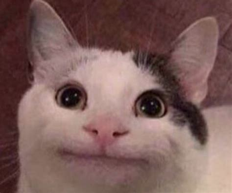

Polite cat
He's very polite

It's a nice cat.
One of my mentors for the Harvard Breakers uses this as his default profile picture, so the meme is now positive by association. Other than that, it's a good default reaction to things.
Polite cat is everybody most of the time. There are some battles that don't need to be fought right now. When you do need to fight, refer to angery mode.
I recently learned the cat is photoshopped. I don't think that it matters too much.